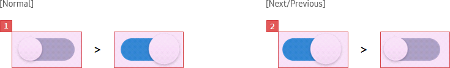
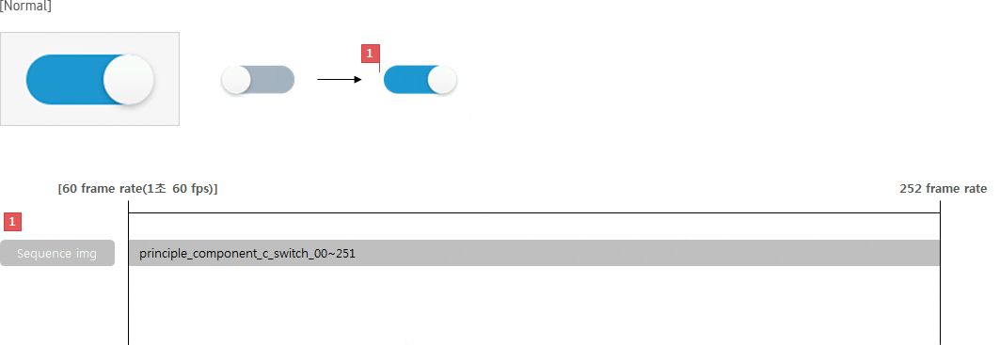
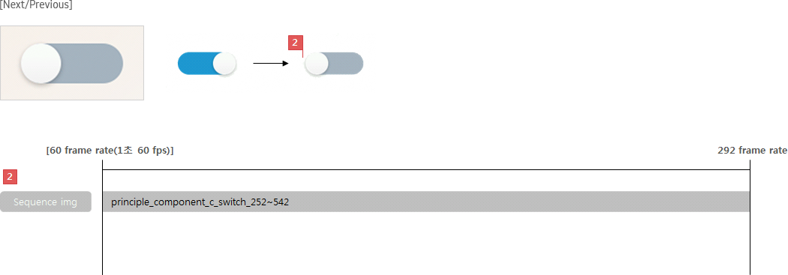
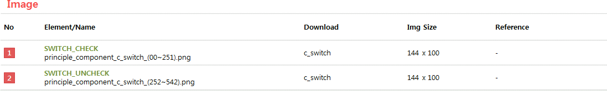

C_SWITCH
- Definition
-
Switch toggles the on/off state of a single settings option.
- Usage
-
- - It is recommended to use it when displaying status by on/off.
- - When the case is that putting another value on, it is recommended to use dropdown list to set the status.
- Interaction
-
- Switch toggle the status by pressing [ENTER] key.
- Specs
-
- Properties
-
- Switch consists of the following elements:
-
- 1. Switch button (Mandatory)
- 2. Text (Optional)
-
- - if Value text is displayed, it should be marked as On or Off
- Property Table
-
| C_SWITCH |
|
PROPERTY
|
USE
|
VALUE
|
| Switch button |
◎ |
- |
| Value text |
|
.On
.Off
|
- Visual
-
- GUI
-
- C_SWITCH_WHITE
- 
- Motion
-
- C_SWITCH
- 
- 

- *Tags :
-
Dropdown